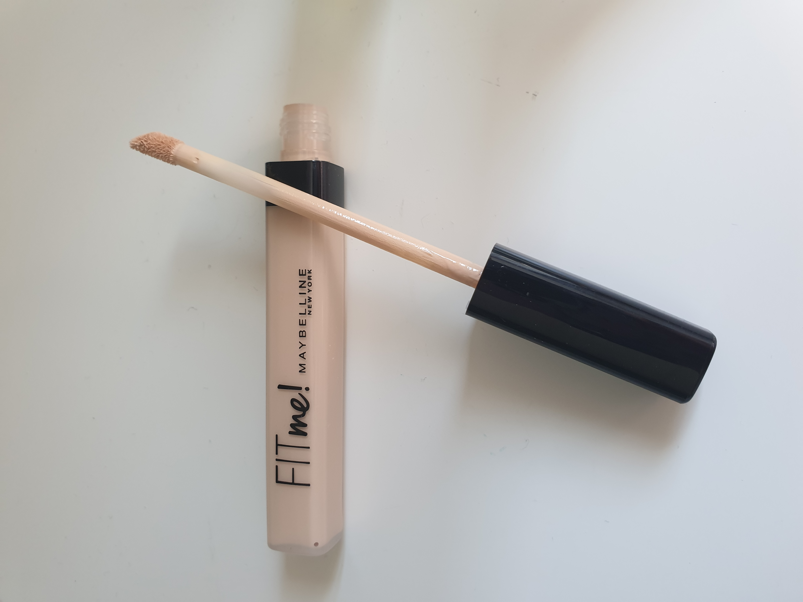
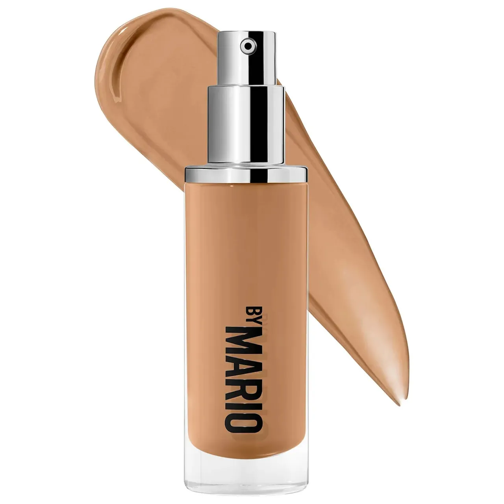
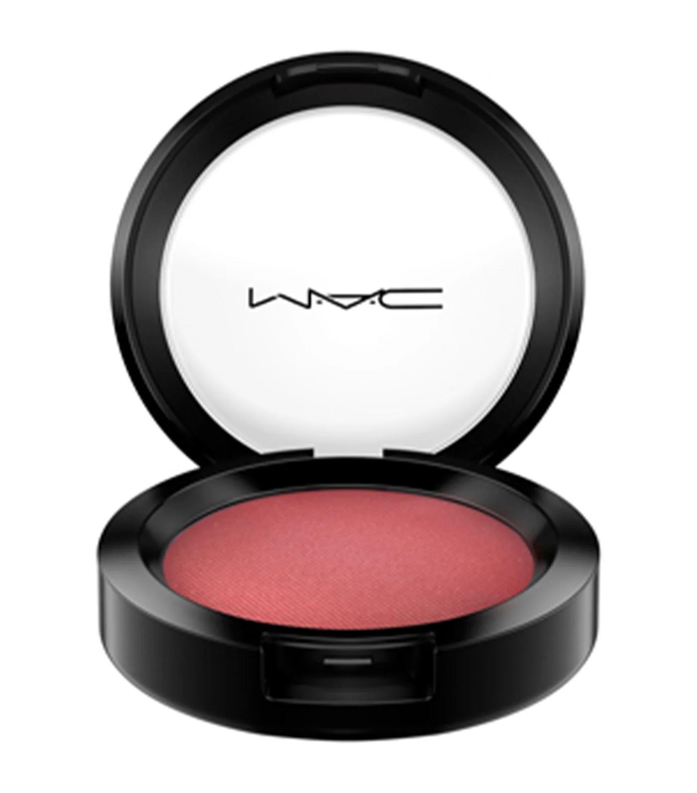
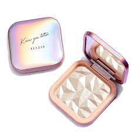
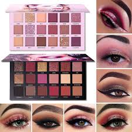
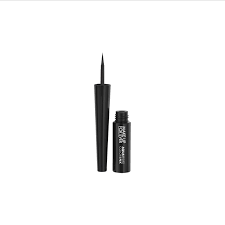

About Us
Sandy's Cosmetics
Cosmetics are constituted mixtures of chemical compounds derived from either natural sources, or synthetically created ones.
[1] Cosmetics have various purposes. Those designed for personal care and skin care can be used to cleanse or protect the body or skin.
Cosmetics designed to enhance or alter one's appearance (makeup) can be used to conceal blemishes, enhance one's natural features
(such as the eyebrows and eyelashes), add color to a person's face, or change the appearance of the face entirely to resemble a
different person, creature or object.[2] Cosmetics can also be designed to add fragrance to the body.
Use
Cosmetics designed for skin care can be used to cleanse, exfoliate and protect the skin, as well as replenishing it, by the use of
cleansers, toners, serums, moisturizers, eye creams, retinal, and balms. Cosmetics designed for more general personal care, such as shampoo,
soap, and body wash, can be used to cleanse the body.
Sandy's Cosmetics Products
Primers
PHP.120.00
.jpg)
Primers are used on the face before makeup is applied, creating a typically transparent, smooth layer over the
top of the skin,allowing for makeup to be applied smoothly and evenly. Some primers may also be tinted, and this tint
may match the wearer's skin tone,or may colour correct it, using greens, oranges and purples to even out the wearer's skin
tone and correct redness, purple shadows or orange discolouration respectively.
Concealer
PHP.110.00

A concealer or color corrector is a type of cosmetic that is used to mask imperfections on the skin. These imperfections can
include dark circles under the eyes, blemishes, and hyperpigmentation. Concealer is similar to, and can be used in conjunction with
foundation, a lighter cosmetic that is used to even out the skin tone. Both concealer and foundation are typically used to make skin
appear more uniform in color.
Foundation
PHP.120.00

Foundation is a cream, liquid, mousse or powder product applied to the entirety of the face to create a smooth and even base in the user's skin tone.
Foundation provides a generally lower amount of coverage than concealer, and is sold in formulations that can provide sheer, matte, dewy or full coverage to the skin.[5]
Rouge or Blush
PHP.100.00

blush, or blusher is a liquid, cream or powder product applied to the centre of the cheeks with the intention of adding or enhancing their natural colour.
Blushers are typically available in shades of pink and red or warm tan and brown, and may also be used to make the cheekbones appear more defined.
Highlighter
PHP.200.00

Highlighter is a liquid, cream or powder product applied to the high points of the face such as the eyebrows,
nose and cheekbones.Highlighter commonly has substances added providing a shimmer or glitter effect. Alternatively,
a lighter toned foundation or concealer can be used as a highlighter.
Eyeshadow
PHP.250.00

Eyeshadow is a powder, cream or liquid pigmented product used to draw attention to, accentuate and change the shape of the area around the eyes,
on the eyelid and the space below the eyebrows. Eyeshadow is typically applied using an eyeshadow brush, with generally small and rounded bristles,
though liquid and cream formulations may also be applied with the fingers. Eyeshadow is available in almost every colour, as well as being sold in a
number of different finishes, ranging from matte finishes with sheer coverage to glossy, shimmery, glittery and highly pigmented finishes. Many different
colours and finishes of eyeshadow may be combined in one look and blended together to achieve different effects.
Eyeliner
PHP.120.00

Eyeliner is used to enhance and elongate the apparent size or depth of the eye; though eyeliner is commonly black,
it can come in many different colours, including brown, white and blue. Eyeliner can come in the form of a pencil, a gel or a liquid.
False eyelashes
PHP.130.00
.jpg)
False eyelashes are used to extend, exaggerate and add volume to the eyelashes. Consisting generally of a small strip
to which hair – either human, mink or synthetic – is attached, false eyelashes are typically applied to the lash line using glue,
which can come in latex and latex free varieties; magnetic false eyelashes, which attach to the eyelid after magnetic eyeliner is applied,
are also available. Designs vary in length and colour, with rhinestones, gems, feathers and lace available as false eyelash designs.
False eyelashes are not permanent, and can be easily taken off with the fingers. Eyelash extensions are a more permanent way to achieve this look.
Lip products
PHP.150.00
.jpg)
including lipstick, lip gloss, lip liner and lip balms, commonly add color and texture to the lips, as well as serving to moisturise the lips
and define their external edges.[5] Products adding colour and texture to the lips, such as lipsticks and lip glosses, often come in a wide range
of colours, as well as a number of different finishes, such as matte finishes and satin or glossy finishes.
Promos

.jpg)
Contact
Reach us out using these following contact details: